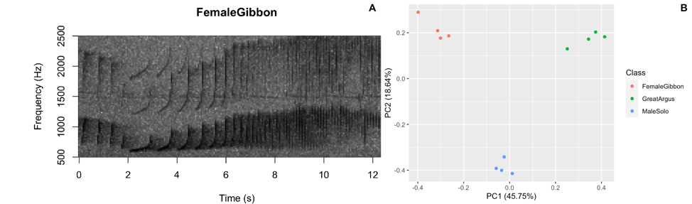

Field Lab 3: Introduction to bioacoustics

Part 1. Introduction
As we have learned in lecture this week, animals communicate through a variety of modalities including visual, auditory and chemical. In lab this week we will focus on bioacoustics techniques, or the study of animal sounds and their habitats. For this lab you will need access to a smartphone or device with recording capabilities, a place where you can record vocal animals and a notebook to write down your observations.
NOTE: If you do not have access to a recording device and/or do not feel you can do this lab outside safely please contact me for a virtual option.
Recording on your smartphone
Please see the website below for tips to record using your smartphone. It would be better to download one of the free apps listed that records sound files as ‘.wav’. If this is not possible you can send me your recordings in the format you have and I can convert them for you.
https://support.ebird.org/en/support/solutions/articles/48001064305-smartphone-recording-tips
Tutorial: How we study sounds
Please see the ‘How we study sounds’ tutorial. Link here: https://rstudio.cloud/project/1381321. You will need to create an RStudio cloud login. To access the tutorial open the ‘HowWeStudySoundTutorial.Rmd’ file and then click the ‘knit’ button. It may take a few minutes to load.
Question 1. What were the main differences between the duets of the different primates? Question 2. What did you notice about the two soundscapes in Ithaca during different seasons? What about the soundscapes from Borneo and Sulawesi?
Part 2. Focal recordings
Focal recordings are generally done using a hand-held, battery operated recording device in the presence of human observer. Focal recordings are used for testing hypotheses related to behavior of the focal animal(s), and the goal is to get high-quality recordings that can be used for subsequent analysis. But, getting high-quality recordings of your target animal is not easy!
For this part of the lab, you are going to record short (5-10 seconds each) focal recordings of any target species. Coordinate with your partner so that you will have the same taxonomic focus (e.g. two species of bird, two species of frog). Aim to get 3-5 recordings of each species. Once you are done give your recordings standardized informative names following the format below (this will help with our analysis later):
Partner 1: ‘BirdSpecies1_a.wav’, ‘BirdSpecies1_b.wav’, ‘BirdSpecies1_c.wav’
Partner 2: ‘BirdSpecies2_a.wav’, ‘BirdSpecies2_b.wav’, ‘BirdSpecies2_c.wav’
To be good scientists, make sure to write down the day, time, location of recordings and any weather notes!
Important: Once you have your recordings please email them to me so that I can make sure they are converted to the right format.
Question 3. What did you and your partner decide to record? What was your sample size? What did you notice about the calling behavior of your target species? Question 4. Did you encounter any difficulties during data collection?
Part 3. Soundscapes
Traditionally, studies of animal behavior relied on human observers, but the use of technology (e.g. acoustic recorders and camera traps) has greatly expanded the spatial and temporal scales that researchers can collect data. Battery-operated, autonomous acoustic recorders can collect data on all vocal animals at the same time, and generally have a farther detection range than camera traps. Soundscapes are the combination of all sounds in a particular environment. Scientists have become increasingly interested in understanding how soundscapes vary over space and time, and in relations to human disturbance.
Part 3a. Study Design
For this part of the lab you and your partner are going to design a small study that will investigate variation in soundscapes at different times (e.g. dawn and dusk) and different locations (e.g. urban versus rural). For each time and location, we will want 3-5 recordings that are the same duration. In an ideal world we would record continuously for 24 hours, but due to space limitations please limit each individual recording to 20 seconds.
Question 5: In the space below briefly outline your study design and predictions. Do you predict there will be more animals calling at a particular time, or at a particular location? How long will you wait in between recordings?
Part 3b. Data collection
Now collect your data! While you are recording, use your notebook write down all the sounds that you hear. If you don’t know the species no problem! Once you are done please format your recordings in the following way:
Partner 1: ‘Site1_Morning_0800.wav’, ‘Site1_Morning_0805.wav’
Partner 1: ‘‘Site2_Evening_1800.wav’, ‘‘Site2_Evening_1805.wav’
Important: Once you have your recordings please email them to me so that I can make sure they are converted to the right format.
Question 5. What did you notice during data collection? Were there any differences in the recording times or locations?
Question 6. Do you feel you were able to document all of the sounds you heard in your notebook? Did you encounter any difficulties?
Part 4. Optional acoustic trivia
Here is a link to acoustic trivia put together by the Center for Conservation Bioacoustics: https://www.birds.cornell.edu/ccb/acoustic-trivia/.